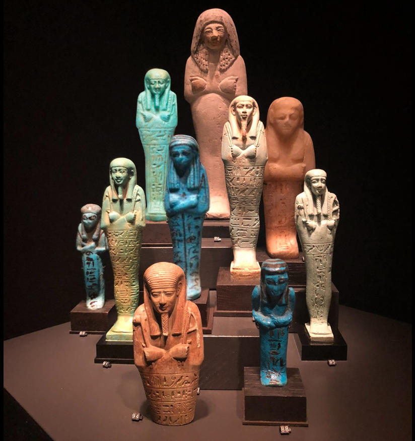

Ushabtis are funerary figurines placed in ancient Egyptian tombs, intended to act as servants for the deceased in the afterlife. Many bear inscriptions of a spell from the Book of the Dead commanding the figurine to answer in the deceased's place when called upon. These inscriptions typically also include the name of the deceased and a directive to perform duties without hesitation.
Ushabtis are typically made from faience, wood, or stone, and first appeared in tombs during the Middle Kingdom, evolving in form and function through the Late Period. When an Ushabti on the art market has an inscription matching one left behind in a looted tomb, it can be an indicator that it might have been looted from the same tomb.
We don't know the provenance of the ushabtis depicted in this photo, but we know one was purchased in London in 2013 for £937.50 (including premium)... but which one?
Which auction house hosted the sale, and who was the ushabti made to serve? (Answer format: "{auction house} {the name of the person this Ushabti was intended to serve}")